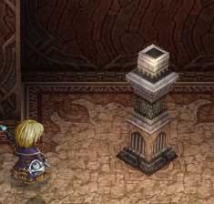

| 概要 | 情報 | 攻略チャート |
| Ys ORININ 攻略へ |
| イベント 邪神像を活性化 咎火の領域の入り口を左へ移動し、赤い魔物を倒す 宝箱から「紅月の刻印」を入手 (前のマップへ戻る) 「紅月の刻印」を咎火の領域入り口の台座にはめる (次のマップへ) スライディングをし、狭い通路を左へ移動 宝箱から「ロダの実」入手 (次のマップへ) 宝箱から「バンデットメイル」を入手 (次のマップへ) 赤い魔物を倒し、邪神像を浄化 (次のマップへ) フィーナとのイベント シオン戦 イベント 「銀のハーモニカ」入手 |
| シオンと戦闘をした場所をさらに奥へ進む 「紅蓮の大剣」を入手  邪神像まで戻り、下のマップへ 炎の魔法で灯籠に明かりを付けて、床の仕掛けを動かし右へ移動 宝箱から「トパーズ」を入手 (次のマップへ) (回廊へ出て次のマップへ) 宝箱から「ルビー」を入手 (次のマップへ) 悪魔の回廊前の邪神像を活性化 |
| 概要 | 情報 | 攻略チャート |
| Ys ORININ 攻略へ |